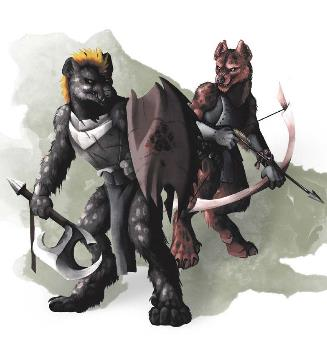

这片‘不毛之地’自古以来就有豺狼人氏族，尽管达坎的地精们在帝国疆域内无情的根除豺狼人，把它们流放到荒原，但关于他们的故事在很久以前便开始记载了。在最早的历史，艾伯伦的归属被霸主掌控，这是一个操蛋的时代，霸主之间伐交频频：拉克·塔尔赫什（Rak Tulkhesh）——战争之怒（the Rage of War），指挥着邪魔军队，而荒野之心（Wild Heart）聚集起成群结队的贪婪野兽。这两者在痛与苦的漩涡里挣扎时,荒野之心繁育出一种不详的鬣狗，能够吞噬拉克·塔尔赫什旗下扎吉亚武士(Zakya warriors)的不朽本质。但荒野之心未曾预料到榨取邪魔会如何的影响到这件作品。鬣狗被他们吞噬邪魔的不朽本质从内到外的转变成一种全新的种群，既不是野兽也不是邪魔。于是第一代豺狼人诞生了。（译者按：扎吉亚Zakya是罗刹种族中善用刀剑的一系族群之名，他们当中的扛把子江湖诨号：暗影剑-莫尔大颗屎Mordakhesh, The Shadowsword，传言它能与巨龙近战搏杀五五开。资料来自eberron.fandom.com/wiki/Rakshasa）
诞生在战争与荒原，豺狼人因拉克·塔尔赫什和荒野之心被招揽和繁育。作为霸主的步卒，他们与兽人和其他早期的类人生物作战，也与其他霸主的豺狼人氏族对抗。即使霸主被打败并被银焰封印之后，豺狼人也是它们的旗子，邪魔的基因在他们体内灼烧。当他们不直接服役于砂主（Lords of Dust），大多数豺狼人都进行着邪恶的暴行。战争之怒寻求永无止尽的战斗，当没有巅峰战局时，它热衷于让自己的仆从彼此搏杀。数不尽的世代以来，豺狼人与巨魔、食人魔以及其他豺狼人厮杀，寻求更多热辣以刺激它们饥渴的主子。
然后，几个世纪以前，两个来自敌对氏族的豺狼人在浸透了他们亲族鲜血的战场上彼此对望——然后质疑起了导致事已至此的由来。这两位仁兄呼吁众人抗拒那个怂恿这场无尽杀戮的声音，拒绝作为邪魔的奴役去追逐死亡。有二就有四，有四就有八，直到全部氏族都响应了号召！部族首领把他们主子的雕像拖到了现在被称为泽尼尔的地方——这个简单的词汇意思是“磐石”——在这里，他们粉碎了这个他们服务过的邪魔形象，抱团在一起。汇聚起来的猎人、萨满和武士发出一个宣言：山川异氏，风月同天，义结金兰。自此强权无惧，神魔亦难撼。(译者按：誓言内容：They might be many clans, but from this
day forward, they would be one pack. They would allow no one—not chib, god, or demon—to hold dominion over them.原文翻译：他们可能不是一家人，但从今天起，近如一家亲。他们不允许还有谁——没有大人物，没有神，没有魔，再能够统治他们。)
这说起来容易做起来可难。与内心中的邪祟作斗争已经够有挑战性了，在外还有不毛之地……这个充斥着暴力强权的混乱之地。新缔结了泽尼尔协定的首领没有统治其他生物的世俗欲望，但即使只想守护一块净土也是可能招致攻伐的。于是乎，他们开辟了一条一直延续至今的道路：雇佣兵道途。豺狼人不再征讨泽尼尔以外的领地，他们会为任何出价合理的人而战。但如果有任何人，想要奴役豺狼人或进攻泽尼尔，他们将承受所有联合氏族倾泻的怒火。这是一个必然进行过多次教育的训诫，但在大约一个世纪后，没人可以不懂这一点。对于那些支付报酬的人来说，这些豺狼人像磐石一样可靠。那些背叛他们或是挑起争端的家伙，他们将会在完整的协定力量面前跪舔。
让一些五国的学者百思不得其解的是，泽尼尔协定从没有跨上征服的道路。在这个地区，没有什么可以与协定的联合力量相提并论，他们本可以击败所有他们所服务的暴徒和战争领主；但显然这些豺狼人再也没有兴起统治其他生物的渴望；他们喜欢狩猎和战斗的刺激，契约的道途允许他们做这种发乎天性的事——追踪并杀戮，无休止的搏斗——但他们找到了一种均衡，他们走在自己选择的道路上，战斗在他们选择的战斗里。有人可以查看协定并质问他们为许多地主老财服务，但泽尼尔的豺狼人会告诉你，他们现今只为自己服务：他们选择为谁而战，他们为他们的服务定好了前提。
泽尼尔豺狼人包括十几个不同的部落，每个部落都有着不同的传统。在过去各个氏族都供奉不同的霸主，但当他们打碎它们的雕像时，每个氏族都选择了一个月亮。所有的豺狼人都熟练掌握如何狩猎与战斗，但芭拉卡丝氏被认为是协定联合中最优秀的追猎者。亚瑞斯氏 Aryth，最致命的弓兵，欧菈卢恩氏 Olarune ，最健硕的武士和最精锐的先锋。最典型，雇佣兵的班组由一个氏族的豺狼人组成，根据执行任务的情况进行分配。而合约的协商通常是根据氏族月亮的周期而决定的。氏族在泽尼尔地区保有特定的领地，但任何氏族的围炉都欢迎所有豺狼人来做客；泽尼尔尽可能平息部族之间的紧张气氛，萨满和每个部族的首领在泽尼尔，围绕在雕像破碎的地方举行理事会。在这里他们调解纠纷，为部族指派合同，以及分配资金和装备。艾尔氏 Eyre磨炼他们作为打铁匠和制皮匠的技艺，尽管在泽尼尔，拾荒的传统依旧根深蒂固——战士们常常向倒下的敌人索要战利品，他们依旧是制造了最多泽尼尔豺狼人使用装备的氏族。

泽尼尔在粉碎雕像时便决定蔑视霸主，但每个豺狼人血脉中残留着一丝邪性的火花，泽尼尔只需要做到拒绝让内心的恶魔统治他们。年轻的豺狼人学会了如何抵抗这种影响力——引导恶魔的力量又不让它侵染自己。对于大多数豺狼人来说，这成了一种纪律。泽尼尔豺狼人最被人称道的是面对挑衅时总能保持冷静，并且已经学会与自己的魔性战斗，他们可不容易被凡人操纵。因而，一些豺狼人学会利用他们的非自然遗馈并将这种力量引导向实用性。泽尼尔豺狼人有适宜他们风格的游侠和野蛮人；游侠的原始魔法来自荒野之心，野蛮人则引导战争之怒来释放自己的狂怒。泽尼尔的萨满与邪术士相似，通常遵循邪魔之力的道途。然而，在所有的这些范例中，泽尼尔都没有为黑暗力量服务；相反，可以看做他们是在白嫖属于自己的力量，学会利用它而不做出任何回报！
他们决意不让邪恶势力再次统治他们的人民，泽尼尔豺狼人发展出自己的技巧以对抗超自然的腐化。被训练专门对付邪魔和死者的勇士们被称为赫威营（hwyri）——豺狼人语意既“督监”，他们所拥有的力量与其他地方的圣武士相当。然而赫威营并不信仰任何神祇的力量。他们的能力来自对内在邪性的训练和掌控；他们不是卫教战士，而是受雇佣的恶魔猎人。大多数的赫威营来自瓦勒特Vult 氏族，在这片远离银焰的土地上，这些豺狼人才是面对邪魔威胁的人们最强大的希望。一直以来瓦勒特氏族都和黑暗族群的兽化人之间都不对付，瓦勒特氏族的萨满认定黑暗族群极易受到荒野之心的腐化。
所以作为一个豺狼人，你的体内会有一丝受恶魔影响的因子，泽尼尔在其幼崽的时候就会学习控制。但它如何在你身上具体体现出来？你是完全抑制了它，还是能以某种方式引导它——或许会体现在你的职业特性上？你是否力争成为与非自然威胁做斗争的赫威营，还是你对此是感到无所谓的。
边栏：迈恩斧
作为在怪物之地的专业团队，泽尼尔豺狼人时刻准备面对形形色色的特异外来者。鉴于此，艾尔氏族打造了一种武器，他们称之为迈恩斧（myrnaxe），以制造它的铁匠而命名。一把迈恩斧有一个坚固的木柄，连接一端弯曲的斧刃以及另一端长长的金属矛头。从性能上来说，迈恩斧是一把战斧(battleaxe)，不过它可以被用来造成挥砍伤害（斧刃）或穿刺伤害（矛头）。通常两端都由不同金属打造，所以矛头可能是银制的，而斧刃则是拜什克金打造——从而最大的发挥其多用性，以对抗多种敌人。（译者按：拜什克金是一种卓姆特产金属，有亮紫色的光泽，用其打造的武器可以突破异怪的伤害抗性。） 泽尼尔都会把迈恩斧当作他们佣兵团标志性的武器而拒绝出售。获得迈恩斧的方式仅限于获得分配和从倒下的对手手中取走。 |
卓姆算是个抬头不见低头见的地方，加之泽尼尔为愿意支付合理价格的任何人提供服务。这难以避免的导致泽尼尔豺狼人彼此之间的冲突。在这种情况下，泽尼尔用他们浑身上下的技术互相比斗，不过他们的攻击停留到点到即止，不下杀手。被另一个豺狼人伤害的话就得立即退出战斗，即使伤口并不算严重。虽然有的雇主会对此感到愤怒：“你他妈明明还能打！回去给老子战啊！”——然而这条规矩也是泽尼尔雇佣契约里的明确条约，轻视这个条例的豺狼人会受到联合氏族的批斗。
卓姆在其周边已是风头正劲，但泽尼尔协定依然夜待风涛三千里。他们不为了食物和住所而工作，而是期望获得他们所提供服务而支付的酬劳。这点对于索拉·科伦的女儿们来说完全可以接受，有整半数的协定雇佣兵都被延长了服役期限。多数的社区都有一支由女儿们雇佣的泽尼尔佣兵驻守，这些部队会为该地区提供保护以免受悍匪和入侵者的祸害，并协助维持秩序。要注意他们服务于女儿们，而不是当地的瓢把子；可以理解为如果瓢把子或战争领主一拍脑门，决定转而反对女儿们，部署的泽尼尔会立刻采取行动干掉他们。协定的其余部分为其他雇主提供服务，许多战争领主的瓢把子都会选择雇佣泽尼尔豺狼人充当保卫人员、执行人员或是追击者。
泽尼尔严肃认真的对待契约，如果委托人违反了约定，合同立即终止；但只要条约的内容被满足，泽尼尔无惧任何危险，且永远不会背弃雇主。他们在几个世纪以来赢得了这样的声誉，这使得他们的地位很像是科瓦雷著名的邓奈斯家族（House Deneith）哨兵执法者。每个人都知道泽尼尔这个词代表着磐石的坚不可摧。
萨拉释克家族已经在五国范围内开展泽尼尔豺狼人的佣兵服务，但协定的首领们对此安排持谨慎的态度。在卓姆，泽尼尔的规矩大伙儿都懂而且知道如何遵守，泽尼尔也可以啸聚一团对抗任何糟践他们的人。然而泽尼尔意识到他们对五国的统治者没有这样的震慑力，并担忧提供服务的地方过于远离他们的磐石。除了那些通过萨拉释克家族和达斯克提供服务的豺狼人，有一些泽尼尔被派往东边针对五国进行考察，收集有关其人民和风俗的知识，以便泽尼尔理事会能够决定如何与更广阔的世界接触。这样一个侦查的定位为玩家的豺狼人角色提供了一条合理的途径；他们的工作就是 游山玩水 周游列国去学习世界运作的方式，广结善缘和盟友。
以下是豺狼人的共同特征——有些是生物性的，有些是文化性上的——能够让泽尼尔的角色活灵活现起来。
生态外貌。一只典型的豺狼人身高可以达到7尺，通常因他们佝偻着背部而难以察觉。雌性和雄性在外表上很相似，其他种族很难准确区分他们。豺狼人在他们的身体上生长厚厚的皮毛；根据不同的族群，可以是纯色的毛色，也可以有斑点或条纹。他们的眼睛是黄色或者绿色的，闪烁着反射光。这些都是一些通常特征，豺狼人的邪魔血统有时也会在外表上体现出来。一个不太寻常的豺狼人可能会闪烁着诡异反光的红色眼睛，有像火焰般锃亮的条纹毛皮，或是其他不同寻常的特征。通常这不会赋予他们特殊的能力，不过你可以将职业或专长能力的特性归咎于这样的突变。
整点骨头。豺狼人拥有强大的下颌，这从他们的造成的啃咬伤害可以看出。他们能够咀嚼和消化骨头，不喜欢浪费这样的食物。当骁勇的豺狼人袭击一个村落时，他们甚至会吃掉受害者的骨头。泽尼尔豺狼人可以不去吃他们击倒的对手，尤其是他们身边伴随着一个对这种行为感到不适的生物时。但它们通常会吃掉被它们杀死生物的一小部分——差不多类似一根手指头——以与这个受害者建立联系。泽尼尔相信其杀死的那些生物会在亡者国度等候，缅怀逝去的生物可以确保当自己也前往那片国度时不会遭受饥饿。
集体意识。豺狼人有很强的集体意识，他们本能的在战斗中团结一致，为了保护自己的亲族不惧将自己置身于危险之中。泽尼尔豺狼人也不会欺瞒他们的氏族成员；如果有什么疑虑，他们会直接指出来。如果一个豺狼人角色选择了一伙冒险者作为其临时的团队，对于其他角色他也抱有这样应对——但如果其他人并是不这样，豺狼人就会感到既惊讶又生气——豺狼人队友将不会对他们展示同等的尊重。
无意冒犯。豺狼人总是看起来对其他生物很有攻击性。然而，豺狼人自己并不认为这种强势凌然的态度是一种敌对行为；这就是在集体环境中建立制度的一种方式，在建立制度的过程中这种态度就被当作理所当然了。这可以体现在豺狼人如何提出要求而不是请求，以及如何采用主动陈述而不是被动的问询。
狡猾猎手。豺狼人天生健硕而且好勇斗狠，但无论是泽尼尔豺狼人还是他们未开化的同族，全都是狡猾的猎人而不是简单的猎物。豺狼人作为一个集体一起工作，总是在寻找敌人的弱点并扶持受伤的盟友。泽尼尔追求绝不食言，但他们也不固执于在战场上必须行为高尚的想法；他们冷酷无情并能寻求高效的方式，并不认为伏击和通过欺骗敌人来获得优势有什么不妥当。一些豺狼人掌握如神助的模仿诀窍（这点可以利用次级幻影或表演专长来展现），并擅用这种手段把敌人引入危险的地方。
工作关系。卓姆是一个多样化的区域，泽尼尔豺狼人总是准备好为任何雇主服务。他们不会以貌取人也不批判他人的信仰；一如他们在卓姆可以忍受恶魔崇拜的牛头人一样，泽尼尔贺威营可以与银焰教会的圣殿骑士或者杜·哈拉（Dol Arrah）的战俑圣武士一同工作。他们或许不喜欢与其共事的人，他们可能会认为这些同伴的信仰是卑贱或愚昧的。但他们把责任放在个人的好恶之前，不会贬低侮辱盟友或是去挑起争端。
沟通。豺狼人语言有其独到之处，包括一系列人类很难捕捉的音调，更遑论模仿。最初级的，有一些听起来很像是鬣狗的叫声，伴随着嗥叫音和喋喋不休的‘笑声’（译者按：桀桀桀桀。）豺狼人以外也有可能学习豺狼人的语言，但这显然是一个困难的壮举。当不需要潜踪匿迹时，泽尼尔在战斗中像是个碎嘴子；在豺狼人语言的习惯中，他们习惯在短促间交流协调行动和确认相互位置。每个泽尼尔豺狼人都有一种嗥叫，一种独特的呼喝就像他口头上的签名；虽然都相当短促，但它们传达个人身份与效忠的氏族信息。它们用于在战场上进行协同，当豺狼人进入一个友好的地点范围，通常都会大呼小叫一番，这是一种简便识别自身的方式，并给盟友一个做出回应的契机。
肢体语言和姿态——一般都是耷拉着——这是豺狼人进行沟通的重要组成部分；例如，当豺狼人感觉到危险或是愤怒时，他的皮毛会沿着脊椎向上翘起。泽尼尔不喜欢书信文字交流，尽管他们需要用来签订合同。